A 3D duct
planex2d sketches lie on planes in 3D. Here, constraint sketches on planes along an axis are the sections of a cooling duct, lofted along guide curves through their named corners. netgen meshes the duct and NGSolve solves the flow in it, and a small PyTorch network learns from a few solved ducts how the design behaves, so that questions about it can be answered without the solver.
The example is a duct that takes coolant from a hose to the flat inlet slot of a cold plate, L = 120 long. Its two ends are fixed by the parts it joins, and the section in between is the design. The goal is as little pressure drop as possible, while the coolant takes up at least as much heat from the warm walls as in a straight transition.
[1]:
import math
import netgen.occ as occ
import numpy as np
import planex as px
import torch
from scipy.optimize import minimize
from scipy.stats import qmc
torch.set_num_threads(1)
The sections
Each section is a rounded rectangle in a constraint sketch on its own plane, made of four lines and four arcs that are tangent all around, centered on the axis, with the dimensions w, h and r. Three of them are sketched: the inlet, 16 × 16 with corners of 5, the outlet, the 40 × 6 slot with corners of 2, and the middle section, which is the design and starts halfway. The loft adds four more sections, interpolated between these, as the next section shows.
[3]:
L = 120.0
def section(w, h, r, z, id="section"):
sk = px.Sketch(px.XY.Offset(z), id=id)
sk.Move((-w / 2 + r, -h / 2)).Line(w - 2 * r, 0, px.Horizontal, id="bottom")
sk.Arc(r, 90, px.Tangent, id="a1")
sk.Line(0, h - 2 * r, px.Vertical, px.Tangent, id="right")
sk.Arc(r, 90, px.Tangent, id="a2")
sk.Line(-(w - 2 * r), 0, px.Horizontal, px.Tangent, id="top")
sk.Arc(r, 90, px.Tangent, id="a3")
sk.Line(0, -(h - 2 * r), px.Vertical, px.Tangent, id="left")
sk.Arc(r, 90, px.Tangent, id="a4")
sk.Constrain("a4.end", "bottom.start", px.Coincident)
sk.Constrain("a4", "bottom", px.Tangent)
sk.Constrain("a1", px.Radius, r, id="r")
for arc in ("a2", "a3", "a4"):
sk.Constrain("a1", arc, px.Equal)
sk.Constrain("left", "right", px.Distance, w, id="w")
sk.Constrain("bottom", "top", px.Distance, h, id="h")
sk.Constrain("bottom.mid", px.V, px.Coincident)
sk.Constrain("left.mid", px.H, px.Coincident)
return sk
inlet = section(16, 16, 5, 0, "inlet")
mid = section(28, 11, 3.5, L / 2, "mid")
outlet = section(40, 6, 2, L, "outlet")
Figure 1 shows the three sketched sections at one scale, at z 0, 60 and 120. The dots are the eight named corners of each section, through which the guides of the loft pass.
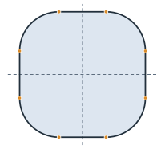
(a) Inlet, 16 × 16
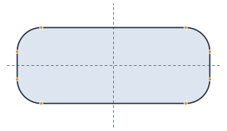
(b) Middle, 28 × 11
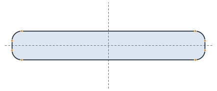
(c) Outlet, 40 × 6
A guided loft
A smooth loft through sections this different overshoots, and between a narrow middle section and the wide outlet, its walls swing past each other. Guide curves steer the loft, as on the page Lofts with guide curves:
Two interpolated sections in each gap, at a third and two thirds of the way, with width, height and corner radius interpolated linearly between their neighbors, make seven sections in all.
Every section names its eight corners,
bottom.start,bottom.end,right.startand so on, and gives them in 3D. A spline through each corner from the inlet to the outlet, leaving the inlet and reaching the outlet along the axis, is a guide.Every 2.5 along the axis, the eight guides are cut and give a new section: the lines through the outermost corners and the arcs tangent to them. These sections cost almost nothing and hold the loft to the guides.
occ.ThruSections lofts through all of them.
Duct is the thin wrapper. Update takes ids such as "mid.w" and "mid.z", and Solid builds the loft and names its faces for the solver. The loft makes one face per edge of the sections, in their order, so faces 1, 3, 5 and 7 are the corner strips. They get small elements, so that the curved elements follow the corners.
[5]:
CORNERS = [f"{edge}.{end}" for edge in ("bottom", "right", "top", "left") for end in ("start", "end")]
def size(sk):
x, y, _ = sk("right.start").center
bottom = sk("bottom.start").center[1]
return 2 * x, -2 * bottom, y - bottom
def meet(guide, z):
a, b = guide.parameter_interval
for _ in range(50):
m = (a + b) / 2
a, b = (m, b) if guide.Value(m).z < z else (a, m)
return guide.Value(a)
def from_corners(points, z):
x, y = np.array([(p.x, p.y) for p in points]).T
left, right = x[6:].mean(), x[2:4].mean()
bottom, top = y[:2].mean(), y[4:6].mean()
r = np.mean([right - x[1], y[2] - bottom, top - y[3], right - x[4],
x[5] - left, top - y[6], y[7] - bottom, x[0] - left])
return section(right - left, top - bottom, r, z)
class Duct:
def __init__(self, *sketches, step=2.5):
self.sketches = {s.id: s for s in sketches}
self.z = {s.id: s.ToXYZ((0, 0))[2] for s in sketches}
self.step = step
def Update(self, values):
dims = {}
for key, value in values.items():
name, dim = key.split(".")
if dim == "z":
self.z[name] = value
else:
dims.setdefault(name, {})[dim] = value
for name, d in dims.items():
self.sketches[name].Update(d)
return self
def Sections(self):
placed = sorted(((self.z[n], s) for n, s in self.sketches.items()), key=lambda p: p[0])
out = [placed[0]]
for (za, a), (zb, b) in zip(placed, placed[1:]):
for t in (1 / 3, 2 / 3):
z = za + t * (zb - za)
w, h, r = (p + t * (q - p) for p, q in zip(size(a), size(b)))
out.append((z, section(w, h, r, z, "interpolated")))
out.append((zb, b))
return out
def Guides(self, sections=None):
sections = sections or self.Sections()
axial = {0: occ.Vec(0, 0, 1), len(sections) - 1: occ.Vec(0, 0, 1)}
guides = []
for corner in CORNERS:
points = [occ.Pnt(*s(corner).center[:2], z) for z, s in sections]
guides.append(occ.SplineInterpolation(points, tangents=axial))
return guides
def Wires(self):
placed = self.Sections()
guides = self.Guides(placed)
sections = dict(placed)
for z in np.arange(self.step, L, self.step):
if min(abs(z - known) for known in sections) > 1e-6:
sections[z] = from_corners([meet(g, z) for g in guides], z)
return [s.ToOCCWire().Move((0, 0, z - s.ToXYZ((0, 0))[2]))
for z, s in sorted(sections.items(), key=lambda p: p[0])]
def Solid(self):
solid = occ.ThruSections(self.Wires(), solid=True)
solid.faces.name = "wall"
solid.faces.Min(occ.Z).name = "inlet"
solid.faces.Max(occ.Z).name = "outlet"
for face in solid.faces[1:8:2]:
face.maxh = 1.0
return solid
duct = Duct(inlet, mid, outlet)
straight = duct.Solid()
print(len(duct.Wires()), "sections in the loft, volume", round(straight.mass, 1))
49 sections in the loft, volume 33070.5
The figures show the seven sections and the guides through their corners (Figure 2), all sections of the loft, including those cut from the guides (Figure 3), and the loft through them (Figure 4). Only the middle sketch is the design; the interpolated sections, the guides and the cut sections follow from the three sketches.
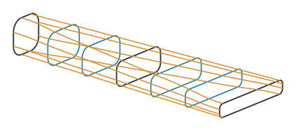
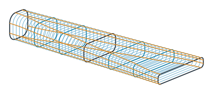
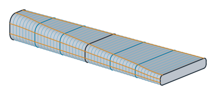
Flow and heat
SolveStokes takes the 3D solid and returns the pressure drop at the coolant’s flow rate and the heat that the coolant takes up from the warm walls, both in units where only the ratios to the straight transition matter. netgen meshes the solid, and NGSolve solves Stokes flow and then the temperature in that flow. How it does that does not matter here, so it sits in a hidden cell. A layout that cannot be meshed raises an error.
[8]:
base = SolveStokes(straight)
print("straight: pressure drop", round(base["dp"], 3), "heat", round(base["heat"], 3))
straight: pressure drop 14.691 heat 110.366
One question for COBYLA
The design is the middle section, described by four numbers: its width w and height h, its corner radius as a fraction f of the largest possible, and its position z. middle(x) turns them into the middle sketch’s dimensions, and solve(x) updates the duct, solves it and counts the real solve. It remembers what it solved, because COBYLA asks for the objective and the constraint at the same layout. A layout that does not mesh is infeasible.
COBYLA answers one question: the least pressure drop that keeps the heat of the straight transition. It works on the four numbers scaled to the box, from 0 to 1, so that one step size suits all of them, and it starts from the straight transition.
[9]:
lo = np.array([12.0, 7.0, 0.2, 30.0])
hi = np.array([44.0, 18.0, 0.7, 90.0])
need = base["heat"]
solves = []
known = {}
def middle(x):
w, h, f, z = x
return {"mid.w": w, "mid.h": h, "mid.r": f * min(w, h) / 2, "mid.z": z}
def solve(x):
key = tuple(np.round(x, 9))
if key not in known:
try:
m = SolveStokes(duct.Update(middle(x)).Solid())
known[key] = (m["dp"], m["heat"])
except Exception:
known[key] = (math.nan, math.nan)
solves.append((np.array(x), *known[key]))
return known[key]
def layout(u):
return lo + np.clip(u, 0, 1) * (hi - lo)
def objective(u):
return np.nan_to_num(solve(layout(u))[0], nan=10 * base["dp"])
def keeps_heat(u):
return np.nan_to_num(solve(layout(u))[1] - need, nan=-need)
u_straight = (np.array([28.0, 11.0, 3.5 / 5.5, L / 2]) - lo) / (hi - lo)
stop = minimize(objective, u_straight, method="COBYLA", bounds=[(0, 1)] * 4,
constraints=[{"type": "ineq", "fun": keeps_heat}],
options={"rhobeg": 0.2, "maxiter": 60, "tol": 1e-3}).message
x_cobyla, dp_cobyla, heat_cobyla = min((s for s in solves if s[2] >= need), key=lambda s: s[1])
print(stop)
print("COBYLA:", round(100 * dp_cobyla / base["dp"], 1), "% of the straight pressure drop,", len(solves), "solves")
Return from COBYLA because the trust region radius reaches its lower bound.
COBYLA: 55.6 % of the straight pressure drop, 38 solves
A map from PyTorch
Another heat requirement would need another COBYLA run. A small network, trained once on a few solved ducts, answers all of them. It uses 32 layouts from a Sobol sequence over the box, each solved once, and learns the logarithm of the pressure drop and the heat from the four numbers. Asking it costs almost nothing, so it is asked for 65 536 layouts at once. For every heat requirement from 85 % to 120 % of the straight transition, it keeps the layout with the least predicted pressure drop, and three of them are solved for real.
[10]:
solves = []
known = {}
for x in qmc.scale(qmc.Sobol(4, seed=5).random(32), lo, hi):
solve(x)
good = [s for s in solves if not math.isnan(s[1])]
X = np.array([s[0] for s in good])
Y = np.array([(math.log(s[1]), s[2]) for s in good])
mean = Y.mean(0)
spread = Y.std(0)
torch.manual_seed(0)
net = torch.nn.Sequential(torch.nn.Linear(4, 32), torch.nn.SiLU(),
torch.nn.Linear(32, 32), torch.nn.SiLU(),
torch.nn.Linear(32, 2)).double()
step = torch.optim.Adam(net.parameters(), lr=1e-2, weight_decay=1e-4)
inputs = torch.tensor((X - lo) / (hi - lo))
targets = torch.tensor((Y - mean) / spread)
for _ in range(2000):
step.zero_grad()
((net(inputs) - targets) ** 2).mean().backward()
step.step()
def predict(x):
with torch.no_grad():
y = net(torch.tensor((x - lo) / (hi - lo))).numpy() * spread + mean
return np.exp(y[:, 0]), y[:, 1]
pool = qmc.scale(qmc.Sobol(4, seed=7).random(2**16), lo, hi)
dp, heat = predict(pool)
front = {}
for q in np.round(np.arange(0.85, 1.205, 0.01), 2):
if (heat >= q * need).any():
front[q] = np.argmin(np.where(heat >= q * need, dp, np.inf))
checks = {}
for q in (0.9, 1.0, 1.1):
x = pool[front[q]]
checks[q] = (x, dp[front[q]], *solve(x))
_, predicted, real_dp, real_heat = checks[q]
print("heat at least", round(100 * q), "%: pressure drop", round(100 * predicted / base["dp"], 1), "% predicted,",
round(100 * real_dp / base["dp"], 1), "% solved, heat", round(100 * real_heat / need, 1), "%, middle at z",
round(x[3], 1))
heat at least 90 %: pressure drop 42.3 % predicted, 42.9 % solved, heat 87.9 %, middle at z 81.5
heat at least 100 %: pressure drop 53.7 % predicted, 54.0 % solved, heat 102.8 %, middle at z 51.4
heat at least 110 %: pressure drop 72.4 % predicted, 72.2 % solved, heat 110.1 %, middle at z 32.6
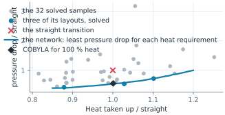
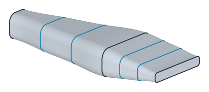
(a) at least 90% heat: 43% of the pressure drop
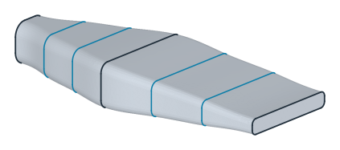
(b) at least 100% heat: 54% of the pressure drop
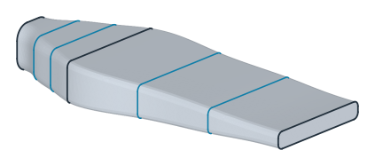
(c) at least 110% heat: 72% of the pressure drop
The blue line in Figure 5 is the network’s answer for every heat requirement at once, learned from the 32 gray samples. The three blue dots are layouts it chose, solved for real, and they land on the line. COBYLA’s answer to its one question, the diamond, lies close to the line: after 38 solves, it is at about 56 % of the straight transition’s pressure drop, and the network’s layout for the same heat needs about 54 %. COBYLA’s 38 solves answer only that one question, while the network answers every heat requirement from its 32 samples and checks each of its three layouts with one more solve. The three layouts are shown as lofts (Figure 6a–c). The width stays at the edge of the box, because a wider duct always loses less pressure, and the more heat the coolant has to take up, the closer to the inlet the duct widens.
The flow in the chosen duct
Figure 7 shows the speed of the coolant in the layout for at least 100 % heat, in a cut along the axis through the middle of the duct, drawn on the planex2d face where the plane meets the solid (px.Intersect3d).
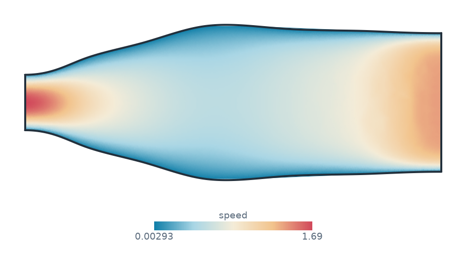
middle section: w 44.0 h 17.2 r 3.5 z 51.4
The duct opens soon after the inlet. The coolant slows down in the wide middle, where a slow flow costs little pressure, and speeds up again only where the duct flattens into the slot. The same duct is shown as a solid that can be turned and zoomed:
[13]:
from ngsolve_webgpu.jupyter import Draw
solid = duct.Update(middle(checks[1.0][0])).Solid()
solid.faces.col = (0.867, 0.902, 0.941)
Draw(solid, euler_angles=[20, 50, 0])
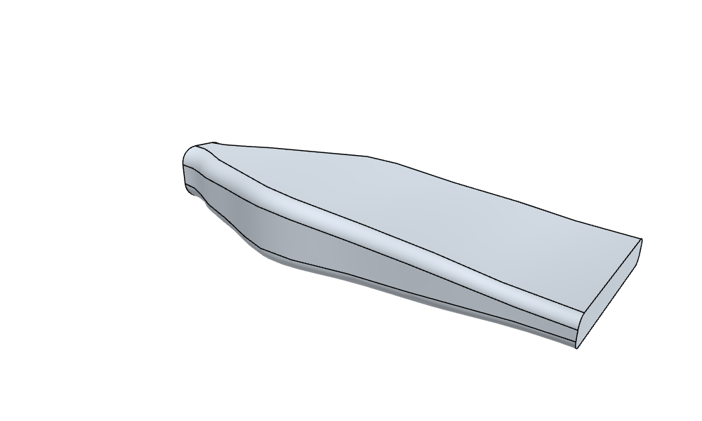